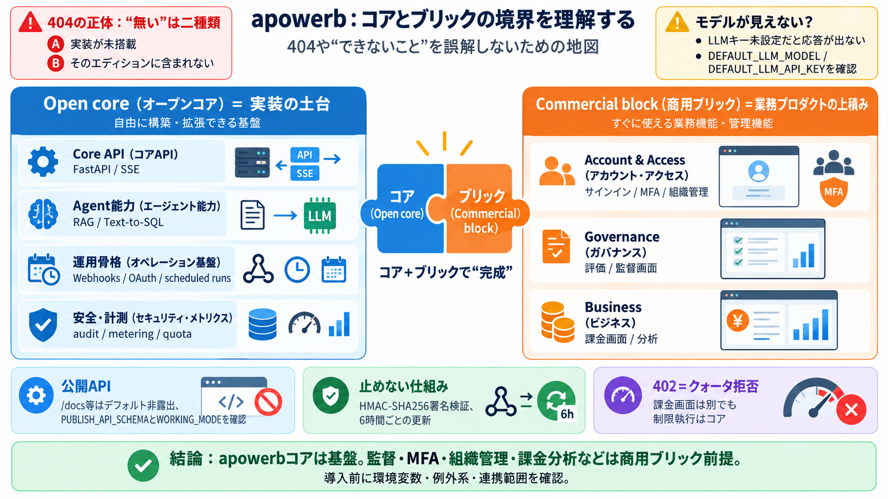

404A
実装がそもそも未搭載（API/機能がない）

apowerb 読み取り整理
apowerbを「どこまでがオープンコアで、どこからが商用ブリックか」という観点で整理し、404や“できないこと”の意味を誤解しないための地図を作ります。
日本語併記：Open core（オープンコア）／Commercial block（商用ブリック）
404 の正体
コアのみ導入していると、実際に「存在しない」のではなく「そのエディションに含まれていない」ため404になります。期待値ズレを避けるのが最初の要点です。
土台＝実装のコア
APIサーバー（FastAPI）として、エージェント実装の中核（RAG / Text-to-SQL / SSE / 外部連携 / スケジュール / セッション監査 / トークン計測）を提供します。
プロダクト完成度
課金画面・組織管理・サインイン・MFA・評価・監督（スーパービジョン）など、業務プロダクトとしての上積みは別コンポーネントです。
Open core（オープンコア）＋Commercial block（商用ブリック）で“完成”する想定。
モデルが見えない
DBや基本起動は動いても、DEFAULT_LLM_MODEL / DEFAULT_LLM_API_KEY 等が未設定だとモデルがリストに現れず、応答が表示されない落とし穴があります。
公開ドキュメントの抑制
デフォルトでは /docs、/redoc、/openapi.json を公開しない方針です。PUBLISH_API_SCHEMA=true でOpt-inできる一方、WORKING_MODE=production が上書きします。
実装の芯
RAGはファイル/URL/DB/S3の索引化に加え、SSRF対策やセッション所有者検証が明記されています。Text-to-SQLはスキーマイントロスペクション中心で、WebhooksはGmail（Pub/Sub）とOutlook（Graph）を扱います。
止めない仕組み
Webhooks署名は HMAC-SHA256 で検証され、さらに期限切れに対して6時間ごとに更新する挙動が扱われています。運用時に“突然止まる”を減らす設計です。
課金は別、制限はコア
Stripe等の課金ロジックや分析画面はブリック側でも、コアは llm_usage への記録と上限（クォータ）による拒否を担います。課金画面が見えないのにブロックされる理由になり得ます。
導入前の確認
コアで動く範囲と、ブリックがないと発生する挙動差を先に把握します。特に「モデル未設定」「404の意味」「公開スキーマ非露出」は最頻の誤解ポイントです。
まとめ
apowerbコアはエージェント運用に必要な中核（RAG/Text-to-SQL/SSE/連携/セキュリティ/計測）を提供します。ただし監督・MFA・組織管理・課金分析などの“完成機能”は商用ブリック前提です。
補足：本スライドは提示抜粋（README中心）からの整理であり、ログ保全期間・審査条件など未確定要素は追加確認が必要。
No references found